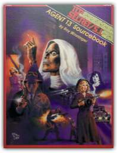
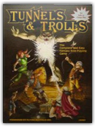
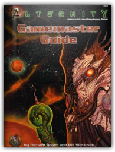
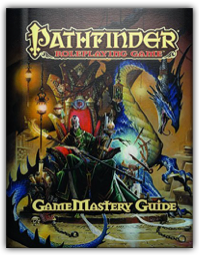
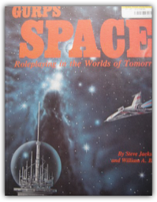
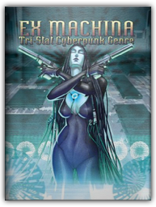

|

Agent 13 Sourcebook: Special Module Tsac2
Mark Acres

The Agent 13 Sourcebook allows Top Secrets/S.I. game players to enjoy the pulp-adventure action of the 30s. Enter the world of diabolical villains, beautiful (and deadly) dames, courageous heroes, and improbable escapes. The Sourcebook also includes a complete background for other adventures in the 1930s, allowing you even more role-playing variety: G-Men on the trail of gangsters, masked crimefighters going where the law can't reach, fearless explorers discovering lost civilizations, and tough private eyes who'll take any case if the money is right. All this excitement is easy to play yet chillingly realistic.
The Walking Dead: Compendium Two
Charlie Adlard, Cliff Rathburn, Robert Kirkman, Sina Grace
Returning with the second eight volumes of the fan-favorite, New York Times bestseller series, The Walking Dead, collected into one massive paperback collection!This is the perfect collection for any fan of the Emmy Award-winning television series on AMC: over one-thousand pages chronicling the next chapter of Robert Kirkman’s Eisner Award-winning continuing story of survival horror — beginning with Rick Grimes’ struggle to survive after the prison raid, to the group’s finding short solace in The Community, and the devastation that follows. In a world ruled by the dead, we are finally forced to finally start living.Collects The Walking Dead #49-96.
Stargate SG-1 Role Playing Game: Core Rulebook
Aeg
From the explosive TV series comes the hottest role-playing game of the year! Enter the Stargate and explore the farthest reaches of the galaxy as a member of SGC.

Tunnels and Trolls
Ken St. Andre
The fundamental framework for adventuring in Tunnels & Trolls is the concept of an underground tunnel complex wherein dangerous traps and deadly monsters guard undreamed-of treasures, where magic and high sorcery meet sword and shield, in alliance or as violent opponents. Those who survive to regain the surface may be considered "winners" - until the next time they venture into the depths, risking their all for glory, gold and adventure. The rules to play Tunnels & Trolls are complete with the booklet in your hands. You need never purchase anything else, and you will have the entire game available to you. On the other hand, there are numerous back-up services - among them, solitaire dungeon adventures, miniatures, and a magazine dedicated primarily to T&T - but these are meant to augment the game. Here is all you'll need.
Dragons & Fantasy: Unleash your creative beast as you conjure up dragons, fairies, ogres, and other fantastic creatures
Kythera of Anevern
Drawing fire-breathing beasts and mysterious, magical creatures has never been so much fun—or so easy! In this 64-page how-to-draw book, fantasy artist Kythera of Anevern demonstrates how to draw dragons, fairies, ogres, merfolk, and everything in between! Readers will discover in-depth tips and techniques for drawing textures such as fur, hair, scales, and teeth, as well as features like tails, wings, talons, hooves, and horns. With a wealth of fanciful drawings and in-depth instruction on re-creating extraordinary creatures in graphite, this book is ideal for anyone who is fascinated by the fantastic.
Apocalypse World
D. Vincent Baker
Something's wrong with the world and I don't know what it is. It used to be better, of course it did. In the golden age of legend, when there was enough to eat and enough hope, when there was one nation under god and people could lift their eyes and see beyond the horizon, beyond the day. Children were born happy and grew up rich. Now that's now what we've got. Now we've got this. Hardholders stand against the screaming elements and all comers, keeping safe as many as they can. Angels and savvyheads run constant battle against there's not enough and bullets fly and everything breaks. Hocuses gather people around them, and are they protectors, saviors, visionaries, or just wishful thinkers? Choppers, gunluggers and battlebabes carve out what they can and defend it with blood and bullets. Drivers and operators search and scavenge, looking for that opportunity, that one perfect chance. Skinners remember beauty, or invent beauty anew, cup it in their hands and whisper come and see, and don't worry now about what it will cost you. And brainers, oh, brainers see what none of the rest of us will: the world's psychic maelstrom, the terrible desperation and hate pressing in at the edge of all perception, it is the world now. And you, who are you? This is what we've got, yes. What are you going to make of it? The book is digest-sized (5.5" x 8.5" ), 300 pages plus a few, color cover, b&w interior.

Alternity Gamemaster Guide
Richard Baker, Bill Slavicsek
As the scene opens... hostile alien vessels converge on a starship in the distant reaches of space... scientists and doctors examine the dying victims of a mutant strain of bacteria... heavily armored space marines discover an ancient artifact on a desolate world...

Pathfinder Roleplaying Game: GameMastery Guide
Cam Banks, Wolfgang Baur, Jason Bulmahn
This comprehensive guide to the art of Game Mastering goes beyond the Core Rulebook to offer tips, guidelines, and additional rules destined to take your Pathfinder Roleplaying Game campaign to the next level. Containing the accumulated knowledge and best practices of Paizo's award-winning creative staff and cadre of regular freelancers, this 320-page hardcover book is filled to bursting with encounter charts, idea lists, encounter design advice, tips for using and adapting published products to your personal campaign, and top-to-bottom guidelines for building a campaign from scratch.

GURPS Space: Roleplaying in the Worlds of Tomorrow
William A. Barton, Steve Jackson
GURPS Space: Roleplaying in the Worlds of Tomorrow [Paperback] [Jan 01, 1988] William A. Barton and Steve Jackson

Ex Machina: Tri-Stat Cyberpunk Genre
Bruce Baugh, Rebecca Brogstrom, Bradley Kayl, Michelle Lyons
Ex Machina d20 is the ultimate cyberpunk genre and setting book for the d20 System! In addition to an extensive treatment of cyberpunk role-playing rules and options, this hardcover book features four dynamic and distinct settings that range from the grim-and-gritty far future to a dystopian world 90 minutes from now.
A Magical Medley
Edward P., Jr. Beard, Ann E. Dupuis
Medicine man, biomancer, magician, monk, sorcerer, or occultist: A Magical Medley has something for everyone! We've compiled a variety of magic systems and magic-related miscellany for use with FUDGE and other role-playing games. Magic systems include: African Spirit Magic, Bioenergetics, Celtic Magic, Chinese Magic, The Gramarye, and Occultism. |
 Made with Delicious Library
Made with Delicious Library